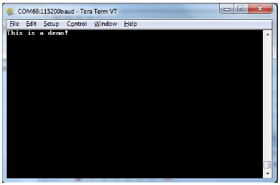

The application is built to work with another FRDM-KW41Z platform running the same example or with the Wireless UART from the Kinetis BLE Toolbox application.
When testing with two boards do the following.
- Open a serial port terminal and connect them to the two boards, in the same manner described in section 5.1.3. The start screen is blank after the board is reset.
- Press the SW4 button on the first board to start scanning for devices. Do the same on the second board. After 3 seconds, the first board enters GAP General Discoverable Mode and
the second board connects.
- As soon as the LED3 turns solid on both devices, the user can start writing in one of the consoles. The text appears on the other terminal, as shown in the figure below.
Figure 1. Tera Term – received text on Wireless UART

When testing with one board and the Kinetis BLE Toolbox do the following.
- Open a serial port terminal and connect the board in the same manner described in section 5.1.3. The start screen is blank after the board is reset.
- Press the SW4 button. After 5 seconds, the board enters GAP General Discoverable Mode and the Kinetis BLE Toolbox app can connect.